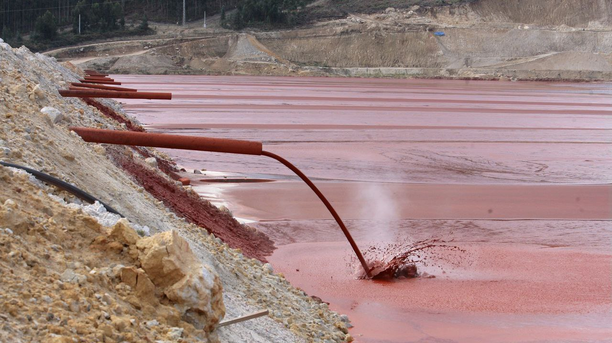

Economía Circular
Aplicada
El Lodo Rojo, o residuo de bauxita, es un subproducto del proceso Bayer para producir alúmina. En UniversalQ, aplicamos tecnologías avanzadas para neutralizar y procesar este material, convirtiendo un pasivo ambiental en una materia prima secundaria.
Nuestro enfoque no solo mitiga el impacto ecológico, sino que también crea nuevas cadenas de valor para la industria pesada, promoviendo un modelo de producción más sostenible.
Procesamiento Sostenible
Neutralización y secado para un manejo seguro y eficiente.
Aplicaciones Industriales
Aditivo para cemento, pigmentos y recuperación de metales.

Subproducto
Residuo Bauxita
Origen
Global
Disponible para proyectos de construcción y metalurgia
Componentes Principales
Logística para Material a Granel
Coordinamos el transporte a granel (Break Bulk) y en contenedores especializados para el manejo seguro de materiales industriales.